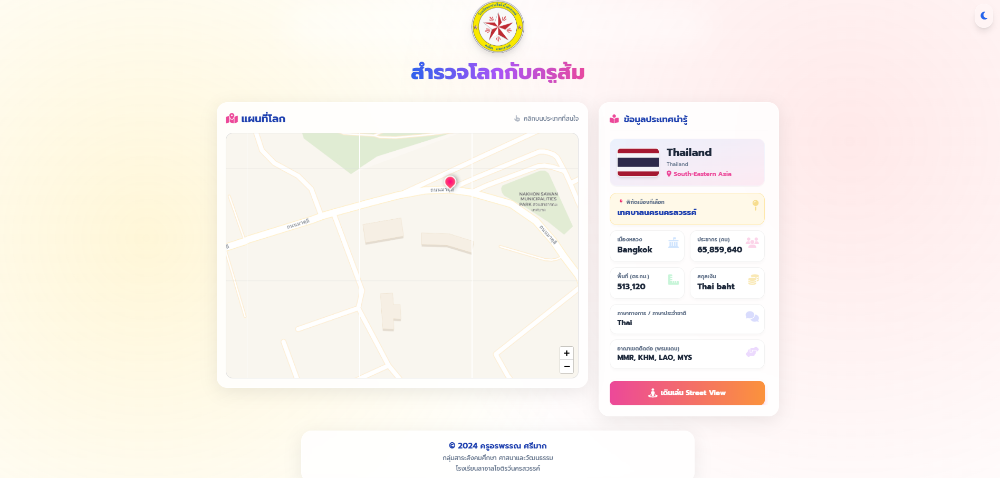
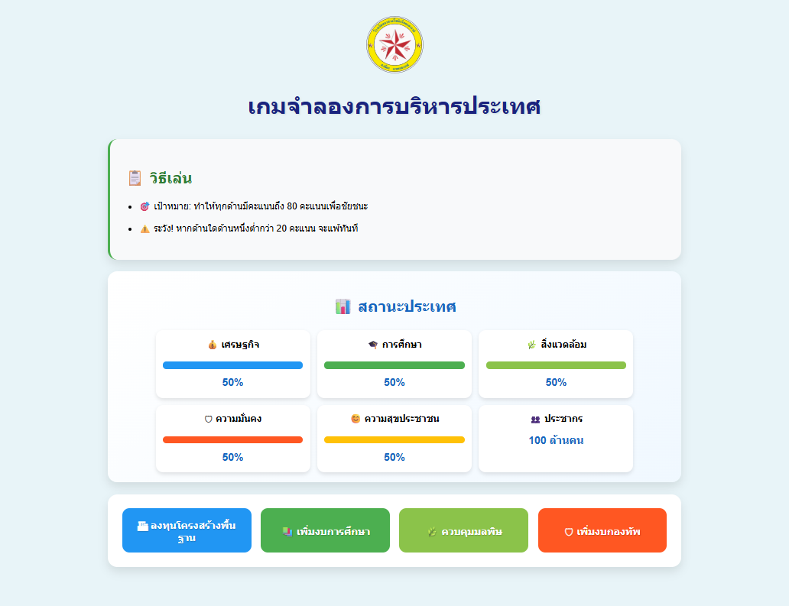
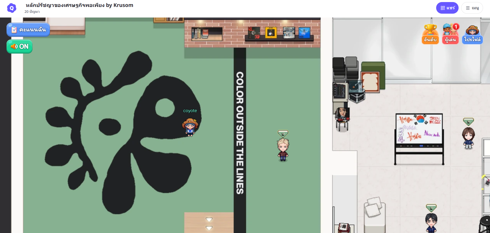

ข้าพเจ้าเป็นครูผู้สอนวิชาสังคมศึกษา ที่มีความเชื่อมั่นในการเรียนรู้แบบ Active Learning และการประยุกต์ใช้เทคโนโลยี เช่น AI และสื่อดิจิทัล เพื่อเปิดโลกทัศน์ให้ผู้เรียน
เป้าหมายของข้าพเจ้าคือการพัฒนาเด็กไทยในศตวรรษที่ 21 ให้มีทักษะการคิดวิเคราะห์ เข้าใจรากเหง้าทางประวัติศาสตร์ และเติบโตเป็นพลเมืองโลก (Global Citizen) ที่ดี
โรงเรียนลาซาลโชติรวีนครสวรรค์ | รับผิดชอบการสอนระดับชั้นประถมศึกษาปีที่4-6
ผู้เรียนได้นำเนื้อหาในวิชาที่ตนเองสนใจมาพัมนาเป็นบอร์ดเกมการศึกษา
ครูผู้ฝึกสอนนักเรียนแข่งขันวันการศึกษาเอกชน กลุ่มสาระสังคมศึกษา ฯ รายการ เล่านิทานคุณธรรม ป.4-6 ชนะเลิศ

ระบบนี้ช่วยให้ผู้เรียนเข้าถึงทวีปต่างๆ ในโลก (รองรับstreet view)
เข้าเว็บไซต์

เป็นส่วนหนึ่งของนวัตกรรมที่นำบทเรียนมาประยุกต์ใช้กับเทคโนโลยี
เข้าเว็บไซต์📧 mugglesom@gmail.com